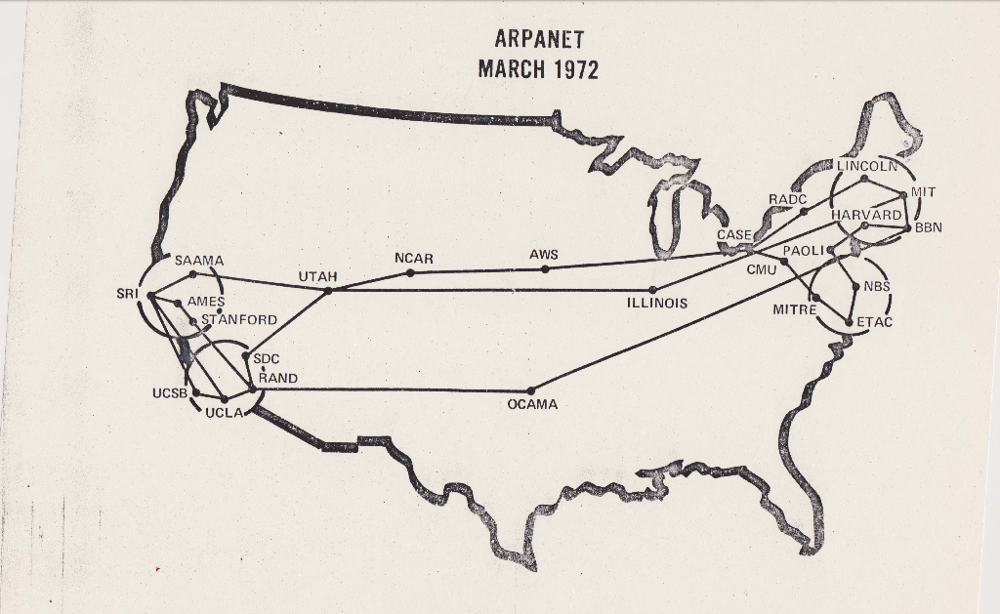

Apos a segunda guerra mundial em um cenario de conflito e corrida tecnologica entre EUA e a União
Soviética
denominado "Guerra Fria",
os sistemas de comunicação militar dos estados unidos passaram por
rapida evolução, porém, ainda eram
vulneraveis por serem dependentes de redes telefonicas ou centralizados de forma que não houvesse distribuição,
abrindo brecha para a queda repentina do serviço,
brechas que poderiam ser utilizadas como forma de ataque,
essa preocupação catalizou o desenvolvimento de uma rede distribuida.
Como solução a ARPA fundação de desenvolvimento de projetos do ministério de defesa, finaciou a criação da
ARPANET (Advanced Research Projects Agency Network)
No início dos anos 80, a ARPANET mudou o protocolo NCP para o novo TCP/IP. Em 1985, a Internet já estava
consolidada como a principal rede de comunicação com alcance global.
em meio à tensão geopolítica global
característica da década de 60, o
Departamento de Defesa dos Estados Unidos alimentava
o temor de que um
potencial ataque pudesse comprometer as
linhas de comunicação entre suas
diversas bases militares.
Essa preocupação foi o catalisador para a criação
da ARPANET
em 1969, uma iniciativa americana que visava
inicialmente
interconectar laboratórios de pesquisa. Este projeto não só
buscou solucionar questões de segurança nacional em um contexto
de Guerra
Fria, mas também estabeleceu as fundações para o
que viria a ser a internet moderna, transformando radicalmente a
troca de informações ao
permitir a interligação de diversas
instituições acadêmicas e de pesquisa.
No final da década de 80 a internet intercone milhares de centro
de pesquisa em todo o mundo, institutos,
universidades e grandes empresas.
A rede chegou ao Brasil em 1988, sendo liberada para uso privado
e comercial em 1994.
Até 1990 os serviços que podiam ser encontrados na rede
eram:
E-MAIL: cartas eletrônicas.
MIRC: Batepapo.
gospher: fórum de discussão em rede.
ftp: troca de arquivos entre máquinas
